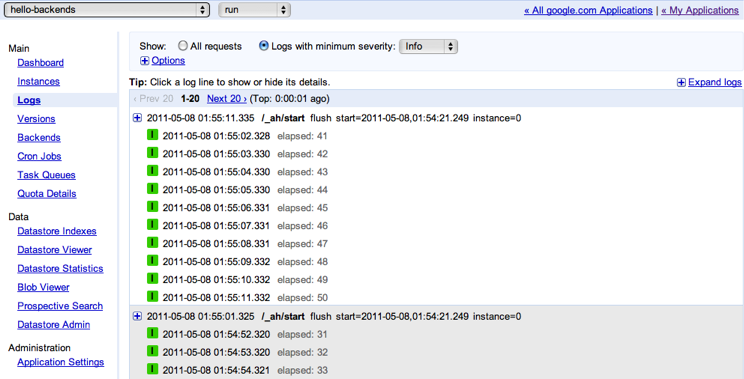
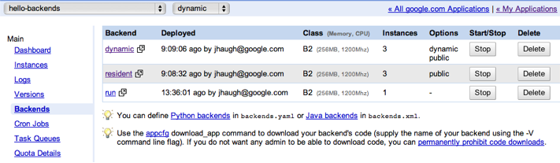

Backends Java API Overview
App Engine Backends are instances of your application that are exempt from request deadlines and have access to more memory (up to 1GB) and CPU (up to 4.8GHz) than normal instances. They are designed for applications that need faster performance, large amounts of addressable memory, and continuous or long-running background processes. Backends come in several sizes and configurations, and are billed for uptime rather than CPU usage.
A backend may be configured as either resident or dynamic. Resident backends run continuously, allowing you to rely on the state of their memory over time and perform complex initialization. Dynamic backends come into existence when they receive a request, and are turned down when idle; they are ideal for work that is intermittent or driven by user activity. For more information about the differences between resident and dynamic backends, see Types of Backends and also the discussion of Startup and Shutdown.
Backends do not automatically scale in response to request volume.
Instead, you specify the number of instances of each backend, and
change this number by performing an update or configure command. The number of instances
is usually set in proportion to the size of a dataset or the degree of
processing power you want to bring to bear on a problem. Cost may
also be a consideration.
Backends are configured using either backends.xml or backends.yaml. You can list each backend and specify its properties, such as the number of instances, the memory and CPU class, whether it is public or private, and other options. Backends share the servlets defined in web.xml with the main application version. You can place your backends in a separate application root directory if you want to avoid sharing code or handlers, or simply mark the relevant handlers with login: admin.
Properties of Backends
The following table compares backend instances to default App Engine instances.
Feature |
Default Instances |
Backend Instances |
| Deadlines |
30-second deadline for HTTP requests, 10-minute deadline for tasks |
Requests to backends can run indefinitely. A backend can choose to handle /_ah/start and execute a program or script for many hours without returning an HTTP response code. |
| CPU |
Flexible, billed by CPU-hour |
Configurable from 600MHz–4.8GHz, included in the hourly price of the instance uptime. See Instance Classes for more information. |
| Memory |
Low memory cap (128MB). |
Configurable memory limit, from 128MB to 1GB of memory per instance. See Instance Classes for more information. |
| Residence |
Instances are evicted from memory based on usage patterns, unless they are marked Always On. |
You can configure backends to use resident instances, which remain in memory, so state is preserved across requests. When backends are restarted, you usually have 30 seconds to finish before shutdown (see Shutdown for more information). |
Startup and Shutdown |
Instances are created on demand to handle requests and automatically turned down when idle. |
Backends are sent a start request automatically by App Engine in the form of an empty request to /_ah/start. A backend that is stopped with appcfg backends stop or using Shutdown in the Administration Console has 30 seconds to finish handling requests before it is forcibly terminated.
See Backend States for more information about startup and shutdown.
|
| Instance Addressability |
Instances are anonymous. |
Instances are individually addressable at a URL of this form:
http://[instance].[backend_name].[your_app_id].appspot.com
You can reliably cache state in each instance and retrieve it in subsequent requests. |
Scaling |
App Engine scales the number of instances automatically in response to processing volume. |
You configure the number of instances of each backend in backends.xml or backends.yaml. The number of instances usually corresponds to the size of a dataset being held in memory or the desired throughput for offline work. A dynamic backend is configured with a maximum number of instances; the number of live instances scales with the processing volume. You can adjust the number of instances of a backend very quickly, without stopping instances that are currently running, using the configure command. |
| Public vs. Private HTTP Requests |
Instances can handle private and public requests. |
Instances handle private requests by default, but you can configure them to handle public requests. |
| Concurrent Requests |
Instances marked <threadsafe> can serve a small number of requests in parallel. |
Instances can specify how many requests to serve in parallel with <max-concurrent-requests>. |
Commands
App Engine provides the following command-line tools allowing you to interact with the Backends configured in backends.xml or backends.yaml.
appcfg backends <dir> update [backend]- Creates or updates a backend configured in
backends.xml. You can update a single backend by specifying a backend name, or all of the backends by running this command without specifying a backend. If the backend was in the START state before the update, it remains started after the update; if it was in the STOP state, it remains stopped after the update. Updating a backend causes instances that are currently running to shut down before new instances come up. Instances will not be shut down until the final step of the update, so that any incremental errors during an update do not result in downtime.
appcfg backends <dir> rollback <backend>- Rolls back a backend update that was interrupted by the user or stopped due to a configuration error. Updates that have been successfully applied are not eligible for rollback.
appcfg backends <dir> list- Lists all the backends configured for the app specified in
dir/appengine-web.xml.
appcfg backends <dir> start <backend>- Sets the backend state to
START, allowing it to receive HTTP requests. Resident backends start immediately. Dynamic backends do not start until the first user request arrives. Has no effect if the backend was already started.
appcfg backends <dir> stop <backend>- Sets the backend state to
STOP and shuts down any running instances. The stopped backend cannot receive HTTP requests; if it recevies a request, it returns a 404 response. This command has no effect if the backend was already stopped.
appcfg backends <dir> delete <backend>- Deletes the indicated backend. After issuing this command, requests to the deleted backend (for example,
http://backend_name.your_app_id.appspot.com) are routed to the default app version.
appcfg backends <dir> configure- Dynamically updates settings in
backends.xml without having to stop the backend. Does not affect any code or handlers. Supports only the following configuration settings:
instancesoptions: publicoptions: failfast
Backend States
A backend can be in one of two states: START or STOP. You can view and change the state of a backend using appcfg or the Backends tab in the Administration Console. The state controls whether a backend instance is considered active and capable of handling requests, or is disabled and shutting down.
Startup
Each backend instance is created in response to a start request, which is an empty GET request to /_ah/start. App Engine sends this special request to bring the instance into existence; users cannot send a to /_ah/start.
Backend instances must respond to the start request before they can handle another request. The start request can be used for two purposes:
- To start a program that runs indefinitely, without accepting further requests
- To initialize an instance before it receives additional traffic
Resident backends and dynamic backends startup differently. When you start a resident backend, App Engine immediately sends a /_ah/start request to each backend instance. When you start a dynamic backend, App Engine allows it to accept traffic, but the /_ah/start request is not sent to an instance until it receives its first user request. Multiple dynamic instances are only started as necessary, in order to handle increased traffic.
When an instance responds to the /_ah/start request
with an HTTP status code of 200–299 or 404, it is considered to
have successfully started and can handle additional requests. If it
responds otherwise, App Engine terminates the instance and
re-issues the start request if necessary. Resident backends are
restarted immediately, while dynamic backends are restarted only when
needed for serving traffic.
Shutdown
When App Engine needs to turn down a backend instance, existing requests are given 30 seconds to complete, and new requests immediately return 404. The shutdown process may be triggered by a variety of planned and unplanned events, such as:
- You manually stop the backend using the Administration Console or
appcfg backends <dir> stop.
- You update the backend using
appcfg backends <dir> update.
- Your backend exceeds the maximum memory for its configured class.
- Your application runs out of Backends Usage quota.
- The machine running the backend is restarted, forcing your backend to move to a different machine.
- App Engine needs to move your backend to a different machine to improve load distribution.
If possible, App Engine notifies the backend 30 seconds before terminating it.
There are two ways to receive this notification. First, the isShuttingDown() method from
com.google.appengine.api.LifecycleManager begins returning true. Second, if you have registered a shutdown hook, it will be called. It's a good idea to register the shutdown hook in your start request.
The shutdown hook appears in your logs as a request to /_ah/stop. The /_ah/stop request bypasses normal handling logic and cannot be handled by user code; its sole purpose is to invoke the shutdown hook. If you raise an exception in your shutdown hook while handling another request, it will bubble up into the request, where you can catch it.
The shutdown hook always runs in a different
thread, even if your app isn't marked threadsafe. Inside the shutdown hook, you can use interruptAllRequests() to cancel your request threads and API calls.
The following code sample demonstrates a basic shutdown hook:
LifecycleManager.getInstance().setShutdownHook(new ShutdownHook() {
public void shutdown() {
LifecycleManager.getInstance().interruptAllRequests();
}
});
Alternatively, the following sample demonstrates how to use the isShuttingDown() method:
while (haveMoreWork() &&
!LifecycleManager.getInstance().isShuttingDown()) {
doSomeWork();
saveState();
}
Backend Uptime
App Engine attempts to keep backends running indefinitely. However, at this time there is no guaranteed uptime for backends. Hardware and software failures that cause early termination or frequent restarts can occur without prior warning and may take considerable time to resolve; thus, you should construct your application in a way that tolerates these failures. The App Engine team will provide more guidance on expected backend uptime as statistics become available.
Good strategies for avoiding downtime due to backend restarts include:
- Load balancing across multiple backend instances
- Configuring more backend instances than are normally required to handle your traffic patterns
- Writing fall-back logic that uses cached results when a backend is unavailable
- Reducing the amount of time it takes for your backend to start up and shutdown
- Duplicating the same state in more than one backend instance.
It's also important to recognize that the shutdown hook is not always able to
run before a backend terminates. In rare cases, an outage can occur that prevents App Engine from providing 30 seconds of shutdown time. Thus, we recommend periodically checkpointing the state of your backend and using it primarily as an in-memory cache rather than a reliable data store.
Addressing Backends
A backend instance can be targeted with HTTP requests to http://[instance].[backend_name].[your_app_id].appspot.com, or at your application's custom domain. If you target a backend without targeting an instance using http://[backend_name].[your_app_id].appspot.com, App Engine selects the first available instance of the backend.
The
Backends API
provides functions to retrieve the address of a backend or instance. This allows application versions to target backends with requests, for a backend to target another backend, or for one instance of a backend to target another instance. This works in both the development and production environments.
The
com.google.appengine.api.backends package contains tools for programmatic access to backend information. The following code sample shows how to get the backend name and instance id for a request:
import com.google.appengine.api.backends.BackendService;
import com.google.appengine.api.backends.BackendServiceFactory;
BackendService backendsApi = BackendServiceFactory.getBackendService();
// Get the backend handling the current request.
String currentBackendName = backendsApi.getCurrentBackend();
// Get the backend instance handling the current request.
int currentInstance = backendsApi.getCurrentInstance();
Public and Private Backends
Backends are private by default, since they typically function as a component inside an application, rather than acting as its public face. Private backends can be accessed by application administrators, instances of the application, and by App Engine APIs and services (such as Task Queue tasks and Cron jobs) without any special configuration.
A backend that is used for offline processing can typically be
taken down, updated, or resized without any user-visible effects.
When a backend is incorporated into a user-visible request flow,
updating it requires more care. Most updates to a backend require existing instances to shut down and new instances to start up. If startup and shutdown are fast, then updates can be performed rapidly with minimal impact on user traffic. You can update certain backend settings without restarting the backend using the appcfg backends configure command.
Monitoring Resource Usage
The Instances Console section of the Administration Console provides visibility into how backend instances are performing. By selecting your backend in the version/backend dropdown, you can see the memory and CPU usage of each instance, uptime, number of requests, and other statistics. You can also manually initiate the shutdown process for any instance.
Periodic Logging
Application logs are periodically flushed during backend
requests. You can tune the flush settings, or force an immediate
flush, using the ApiProxy. When a flush occurs, a new log entry is
created at the time of the flush, containing any log messages that had
not been flushed yet. These entries show up in the Logs
Console marked with flush, and include the start time of
the request that generated the flush:

Fetching Request Logs and Application Logs
For programmatic access to the request and application logs for your application, you can use LogQuery This feature allows you to retrieve logs using various filters, such as request ID, timestamp, and version ID.
Administering Backends
The Backends Console section of the Administration Console provides a list of all backends and gives you the option to start, stop, or delete a backend. Backends are listed alphabetically, along with any options you choose when configuring the backend (such as the option to make the backend dynamic):

Billing, Quotas, and Limits
Billing
Backends are priced based on an hourly rate determined by the backend class. The following table describes the cost for each class:
| class configuration |
Memory limit |
CPU limit |
Cost per hour per instance |
B1 |
128MB |
600MHz |
$0.08 |
B2 (default) |
256MB |
1.2GHz |
$0.16 |
B4 |
512MB |
2.4GHz |
$0.32 |
B8 |
1024MB |
4.8GHz |
$0.64 |
In general, backend usage is billed on an hourly basis based on the backends uptime. Billing begins when the backend starts and ends fifteen minutes after the backend shuts down. Runtime overhead is counted against the instance memory limit. This will be higher for Java than for Python.
Billing is slightly different in resident and dynamic backends:
- For resident backends, billing ends fifteen minutes after the backend is shut down.
- For dynamic backends, billing ends fifteen minutes after the last request has finished processing.
Changing the class of a backend also impacts billing:
- If you switch from a higher class to a lower class, you pay the higher price for fifteen minutes after the change.
- If you switch from a lower class to a higher class, you begin paying the higher price when the higher-class backend receives its first request.
Quotas and Limits
Backends are exempt from the 60-second deadline for user requests and the 10-minute deadline for tasks, and run indefinitely. Backends are subject to the same API quotas, limits, and call deadlines as normal instances, with the following exceptions:
- Backends are allowed to make up to 100 simultaneous API calls
- Task Queue tasks have a 24-hour deadline when sent to a backend
Backends have the following limits:
| Limit |
Amount |
| Backends per application |
5 |
| Instances per backend |
20 |
| Total configured backend memory, either resident or dynamic, per app |
10GB |